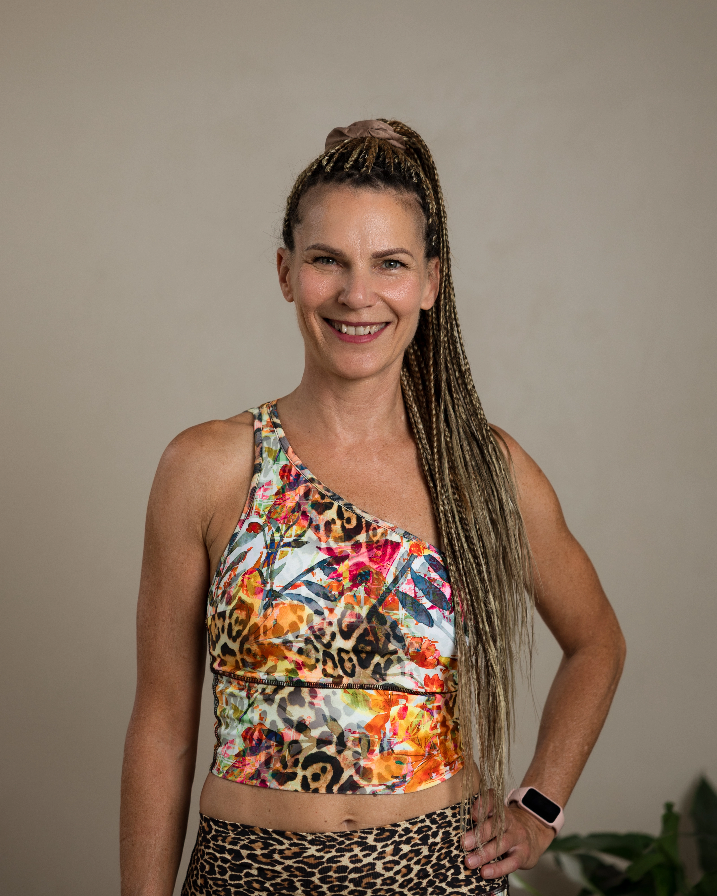
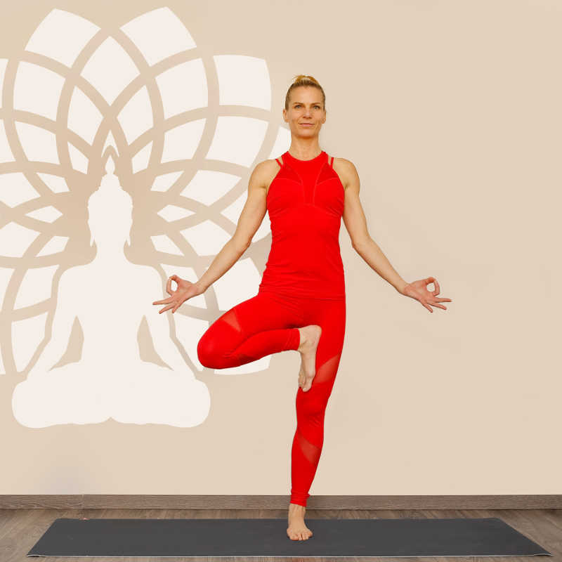

Lassulj le. Kapcsolódj magaddal. Találd meg a saját ritmusodat.


Mozgás és önismeret – ez vezérelt mindig.
Gyermekkoromban művészi tornáztam, jazz-balettoztam, majd aerobikot oktattam 15 éven át. Az igazi fordulópont a jóga lett: 2006-ban egy 21 napos indiai kurzus mélyen átformálta a testhez és az elméhez való kapcsolatomat.
Az első jógaórán rájöttem, hogy a mozgás és a meditáció együtt is működik – ez lett az én utam. Azóta sorra végeztem különböző jóga- és fasciális képzéseket, és az integrált manuálterápiát is alkalmazom egyéni kezeléseken.
A jóga nem csak mozgás: a test, az idegrendszer és a lélek harmóniáját hozza el. Az óráimon és táboraimban a pillanatnyi élményekre és az önismeretre fókuszálunk. A jóga életmód: hatással van a mindennapjainkra.
Képzettségek Gerincjóga · Hatha jóga · Jóga flow oktató · Fasciális jógaterapeuta · Jóga mozgásterapeuta · Ashtanga jógaoktató
Ismerj meg jobban →Samadhi Jógastúdió, Budapest XIII., Dráva u. 17. Flow jóga és Yoga dream flow jógaórák – lépésenként haladunk a könnyebb gyakorlatoktól a nehezebb ászanák felé.
Csak neked. Akár hátfájás, tartáshibák, vagy ászana gyakorlás a célod, az egyéni óra rólad szól. Fasciális arc és test terápián pedig ránézünk az egyéni egyensúlybomlásokra.
130+ felvett jógavideó és rendszeres live alkalmak. Gyakorolj akkor, amikor neked jó – otthonról, bármilyen eszközön. Magyar nyelvű, tematikus órák.
Inspiráció, tippek, legújabb órák és események. Egy támogató közösség, ahol jófej jógik támogatják egymást.